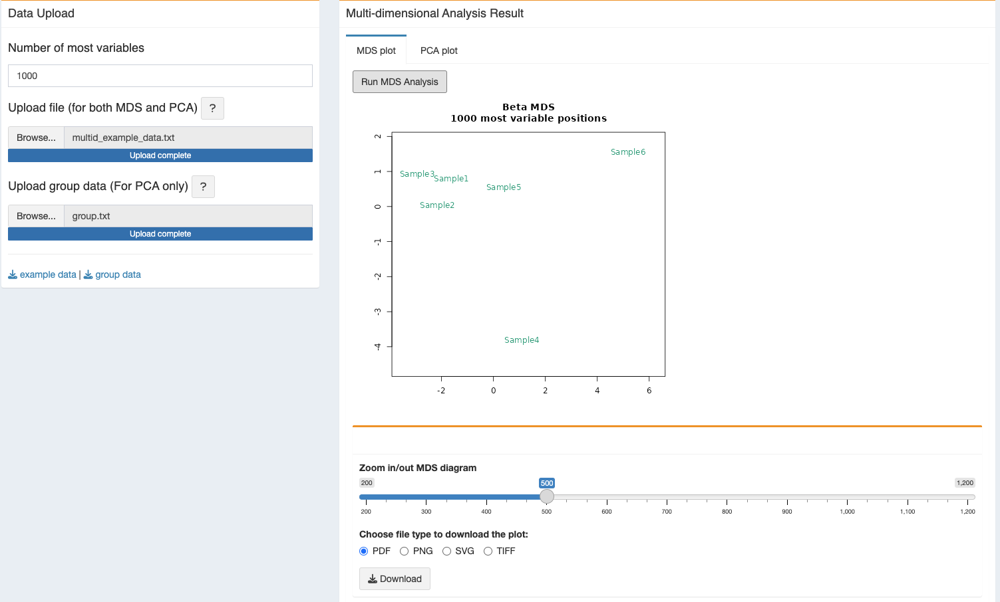
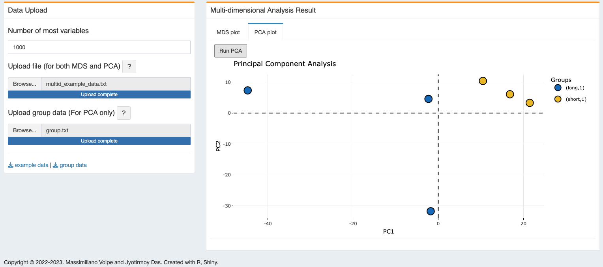

2 Multi-D Analysis
In methylR, multiple dimensional analysis includes two type of analysis -
1. MDS: Multidimensional Scaling
2. PCA: Prinicipal Component Analysis
Multidimensional scaling is a visual representation of distances or dissimilarities between set of objects. MDS finds set of vectors in p-dimensional space such that the matrix of Euclidean distance among them corresponds as closely as possible to some function of the input matrix. The input to multidimensional scaling is a distance matrix. To get some more details on how to use MDS in biological data, read (Mugavin 2008; D. Lacher 1987; D. A. Lacher and O’Donnell 1988) Principal Component Analysis (PCA) is the original vectors in n-dimensional space and the data are projected onto the directions in the data with the most variance.
2.1 How to use
For both analysis, user need to provide a TEXT (tab-delimited) file with numeric values, e.g. the output normalized table from methylysis, i.e. the normalized value table. However the user can use similar tables for the analysis.
2.1.1 Data Upload
- Select the text file (tab-delimited file) and upload it.
- User can choose the option to use number of variables from the uploaded data file.
- On the right tab, under “MDS plot”, user will find the button to “Run MDS Analysis”
- Next tab is designed for the PCA plot and here user can have an input of text file to highlight the group.
NOTE Please note that, the single column with header “group” should be supplied in this file. Match the column names of the variable data file with the group. Example: If in the variable data file, the column names are - sampleA1 sampleA2 sampleA3 sampleB1 sampleB2 sampleB3 the group text file should be like this - group
A
A
A
B
B
B
For more, please see the test data files.
2.2 Analysis result
2.2.1 MDS plot
- After the click on “Run MDS Analysis”, the program will take some time to generate the plot and will appear as soon the run finishes. The zoom bar can be used to zoom in/out the plot.
- The generated figure can be downloaded in different format, vector graphics support - PDF and SVG or PNG and TIFF. User can download all different options for the same figure.

2.2.2 PCA plot
- The plot will be generated after computing the PCA, “Run PCA” with the group colors and legend.
- The generated plot is dynamic and positional details with the group name can be seen with mouse hovering.
- The plot is generated using the plotly application, it can zoom in/out, save figure as PNG format, and do all other available functionality for plotly figures.
- User can also download the dynamic figure as html file.
- To generate the PCA plot one additional TEXT file is needed. This single-column file must have “group” as header and should store the sample group in the same order as you have in the Sample_Group column of the Sample_shee.csv file. Please find here an example of this file that you can use with the test data provided with this distribution.

2.3 R packages used
TO ALL OUR USERS, IF YOU ARE EXPERIENCING ANY TROUBLE WITH THE APP, BEFORE SENDING THE BUG REPORT, PLEASE RESTART THE DOCKER CONTAINER AND TRY AGAIN.↩︎